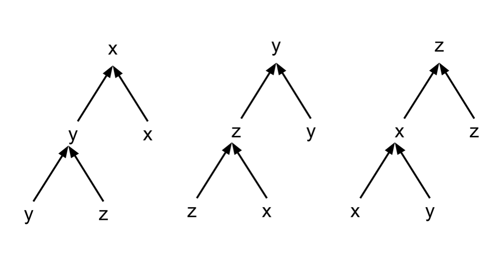

You might have noticed that a lot of times the final outcome of the democratic voting is hard to digest not because of the outcome itself, but because of the way it was decided. In this blog, we will talk about what should an ideal voting rule should look like and discuss some standard paradoxes arising out of different voting rules. The contents of this blog are based on a term paper I submitted for the course on Game Theory in the Jan-May 2020 semester at IIT Madras.
The democratic practices involve voting. In a reductionist view, democracy is simply a mechanism to choose an outcome by allowing voting by all the stakeholders. There are N number of voting rules that we can come up with. Interestingly, not all voting mechanisms lead to the same outcome. Even if we consider the voting rule is majority based, i.e., the outcome is decided on the basis of which candidate got the most vote, we can have another democratic voting rule that might lead to completely different outcome.
Moreover, the voting rules can be manipulated systematically in order to favor a particular outcome. For instance, consider a scenario where stone, paper and scissors are competing for a position. The election has two rounds, where two candidates go first and the winner then goes against the remaining candidate. The election commissioner gets to set the agenda (an actual term, in social choice theory) regarding which pair will compete first. Say the commissioner decides to put stone and paper against each other in the first round, the outcome of the election would be scissors as the paper wins in the first round but loses to the scissors every time. What would happen if scissors are in the power, and they pick a favourable election commisioner? This leads to a stable authoritarian regime under scissors, although scissors is getting elected democratically! Leaving out the exaggerations, the reader must have gotten my point -- democratic voting is not entirely ideal as even if the agenda was set differently at the beginning, it will lead to a situation where only one outcome stabilises over the entirity. Obviously, questions pop up: What is an ideal voting rule? Does there exist one? We will answer this in steps.
First, we will talk about the voter. We want our voter to be someone who: (i) gives her choices over every pair of candidates (x, y) in terms of clearly preferring one over other (for this blog, we will ignore the case where the voter is indifferent about the two) and (ii) prefers x over z given she prefers x over y and y over z. In simple words, the voter should be able to give a list of preferred candidates in a descending order. Such voter is called as 'rational' voter.
If you think about it, our ideal voting rule should look something like: (i) the rule should also produce a rational outcome collectively. That is, if we apply a voting rule it should produce a descending order of preferences over the given candidates. We do not want a scenario where the outcome prefer x over z, when y is preferred over x and z is preferred over y. If you are wondering why this should be the case, otherwise, the rule will produce a cycle among candidates and with cycle you cannot choose one over others. (ii) Being rational should be enough for a voter to take part in an election. We should not be discriminating amongst voters based on their views and opinions. (iii) If all voters prefer candidate x over candidate y, then the voting rule's outcome should not prefer y over x. (iv) The final results concerning a pair (x, y) should depend only on the preferences related to x and y, and should not be dependent on voters' opinions about third candidate z. (v) The voting rule should not allow dictatorship of single voter, i.e., the outcome should not be dependent on single voter's preferences. In summary, an ideal voting rule should be rational, should allow every rational voter, should obey voters' consistent preferences, should not be influenced by voter's opinions about third candidate while comparing two given candidates and should not allow dictatorship.
So, does there exist an ideal voting rule which follows everything discussed above? Answer is NO! To prove that there doesn't exist one, Kenneth Arrow won a Nobel Prize in Economics. I skip the proof for this blog post. As a consequence of Arrow's work, a lot of inconsistencies with voting rules were explained and also, a new set of inconsistencies were identified, which are known as 'paradoxes of voting'. Now let's dive into the paradoxes one by one.
(1) Condorcet's paradox (let's simply call this, cycle paradox for remembering it in future). So cycle paradox arises
if we have three voters 1, 2, and 3, and three candidates x, y, and z, with following preferences:
| Voter | 1 | 2 | 3 |
|---|---|---|---|
| Preferences | x > y > z | y > z > x | z > x > y |
(2) Agenda paradox (let's simply call it, stone-paper-scissors paradox). I also talked about this paradox in the beginning of the blog.
The paradox arises due to the end result being dependent on the agenda of voting in the two round election.

We can see that the outcome is dependent on how the two rounds are arranged.
(3) Dominated-winner paradox (let's call it nobody-wanted-this-guy-to-win paradox). This paradox arises when you have a preference profile like this:
| Voter | 1 | 2 | 3 |
|---|---|---|---|
| Preferences | x > y > w > z | w > x > y > z | z > w > x > y |
(4) Majority-winner paradox (let's call this but-she-won-the-majority paradox). By the way, the names given to the paradoxes are completely fictional and if you find any significant resemblance with any person or event, it is purely coincidental, although a part of me doesn't agree with this sentence. Anyway, consider two voting rules: one is simply majority rule over the candidates and other is a count-based voting rule where each voter gives a count 3, 2, 1 to her first, second and third preference respectively. The outcome of the voting is decided by the sum of counts and the candidate with highest count wins. Now, consider the following preference profile:
| Voter | 1 | 2 | 3 | 4 | 5 | 6 | 7 |
|---|---|---|---|---|---|---|---|
| Preferences | x > y > z | x > y > z | x > y > z | y > z > x | y > z > x | y > x > z | z > x > y |
With these, we come to the end of the discussion on paradoxes.
If you want to know, this is how I concluded my term paper: "Voting might lead to intransitive results, agenda based voting rules can be manipulated by agenda creator, Borda count can be manipulated by truncation, plurality rule doesn't satisfy independence of irrelevant alternatives, voting based on Condorcet's rule might not give a Condorcet's winner -- all these underline the fact that every voting rule has its inherent flaw. Before establishing democratic institutions, it is good to keep the paradoxes of voting as caveats in the mind. One might use the paradoxes to argue against democracy, but we think the roots of democracy will become even firmer if voters know these paradoxes a priori."
And, I will conclude this blog by: "So, in the current blog, we saw cycle paradox, stone-paper-scissors paradox, nobody-wanted-this-guy-to-win paradox, and but-she-won-the-majority paradox. There are many other interesting paradoxes which you can find online. If you want to read the actual term-paper, please feel free to contact me. I will be happy to share it with you. Remember, the democratic voting systems have their own flaws and knowing these flaws is the first step towards making a better democracy. In case, someone draws a conclusion that democracy is not the best system, then I would like to quote a famous saying: 'Democracy is the worst form of government, except for all the others.' "